Kapital 4 Visualisering - ggplot2 dag 2

4.1 Læringsmål og videoer
I det nuværende emne udvider du værktøjskassen af kommandoer i pakken ggplot2, så at du kan opnå større fleksibilitet i dine visualiseringer. Jeg anbefaler, at du bruger notaterne som en form for reference samtidig med at du arbejder med problemstillingerne.
Du skal være i stand til at:
- Arbejde fleksibelt med koordinatsystemer - transformere, modificere og “flip” x- og y-aksen.
- Udvide brugen af farver og former.
- Tilføje tekst direkte på plottet ved hjælpe af
geom_text()oggeom_text_repel(). - Bruge
facet_grid()ellerfacet_wrap()til at opdele plots efter en kategorisk variabel.
Checklist til Kapitel 4: ggplot2 (dag 2)
- Se videoerne
- Kig igennem kursusnotaterne
- Lav quiz “ggplot2 - dag 2”
- Lav problemstillingerne
4.2 Koordinat systemer
Her arbejder vi videre med koordinater i pakken ggplot2.
4.2.1 Zoom (coord_cartesian(), expand_limits())
Man kan bruge funktionen coord_cartesian() til at zoome ind på et bestemt område på plottet. Indenfor coord_cartesian() angives xlim() og ylim(), som specificerer de øvre og nedre grænser langs henholdsvis x-aksen og y-aksen. Man kan også bruge xlim() og ylim() uden coord_cartesian(), men i dette tilfælde bliver punkterne, som ikke kan ses i plottet (fordi deres koordinater ligger udenfor de angivne grænser) ignoreret (med en advarsel). Med coord_cartesian() beholder man til gengæld samtlige data, og man får således ikke en advarsel.
Nedenfor kan I ser vores oprindelige scatter plot:
ggplot(iris, aes(x = Sepal.Length, y = Sepal.Width,color = Species)) +
geom_point() +
theme_minimal() 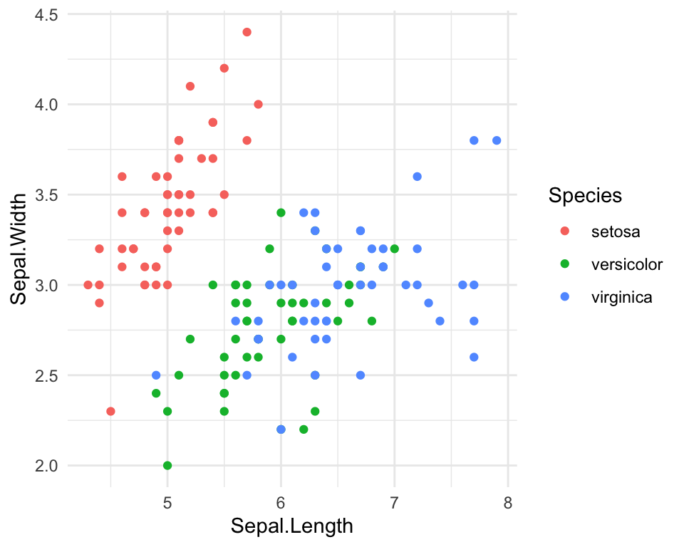
Og her anvender jeg funktionen coord_cartesian() samt xlim() og ylim() til at zoome ind på et ønsket område på plottet.
ggplot(iris, aes(x = Sepal.Length, y = Sepal.Width,color = Species)) +
geom_point() +
coord_cartesian(xlim = c(4,6), ylim = c(2.2,4.5)) +
theme_minimal() 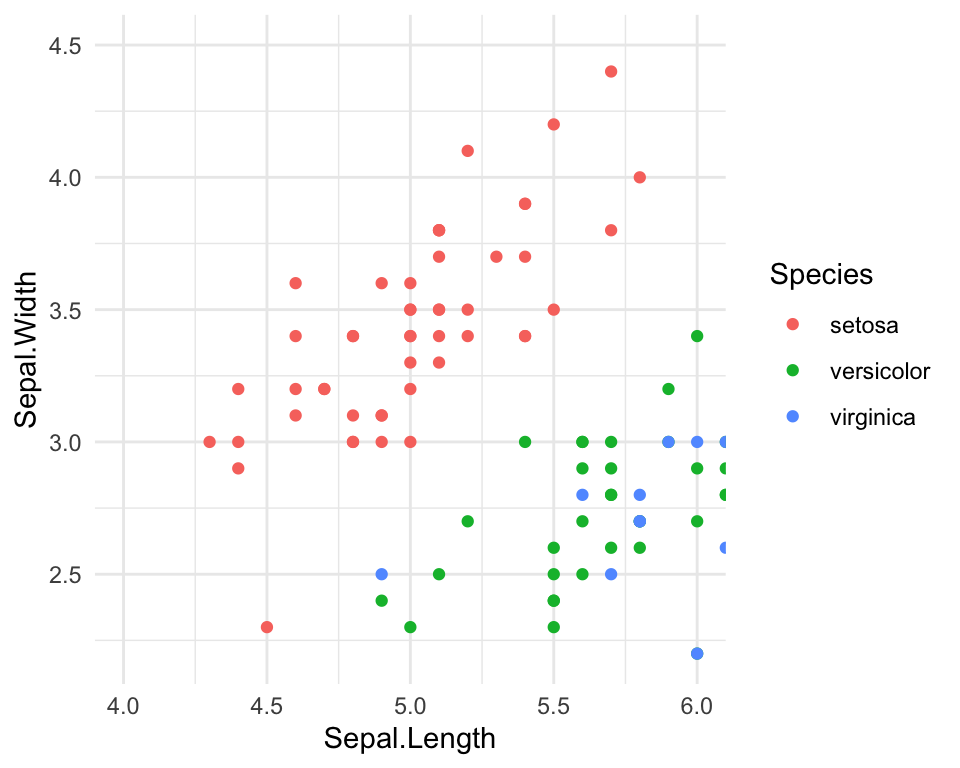
Du kan også zoome ud ved at bruge expand_limits(). For eksempel, hvis jeg gerne vil have punkterne \(x = 0\) og \(y = 0\) (c(0,0), eller “origin”) med i selve plottet:
ggplot(iris, aes(x=Sepal.Length, y=Sepal.Width,col=Species)) +
geom_point() +
expand_limits(x = 0, y = 0) +
theme_minimal() 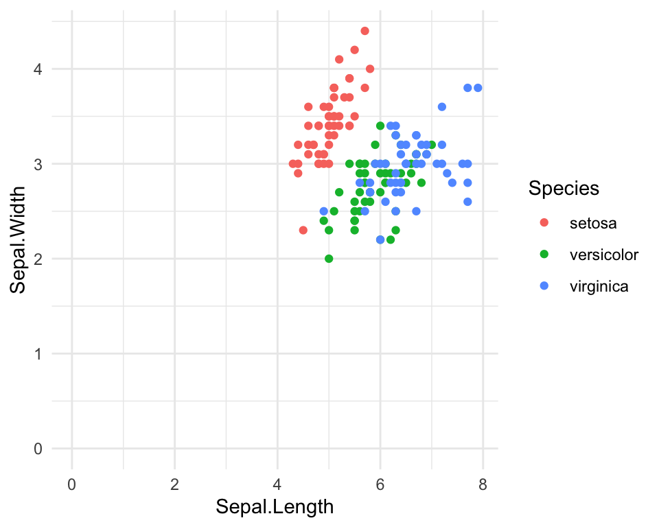
Det kan være brubart i situationer, hvor man for eksempel har flere etiketter omkring punkterne i selve plottet, som bedre kan ses, hvis man tillader lidt ekstra plads.
4.2.2 Transformering af akserne - log, sqrt osv (scale_x_continuous).
Nogle gange kan det være svært at visualisere visse variable på grund af deres fordeling. Hvis der er mange outliers i variablen, vil de fleste punkter samles i et lille område i plottet. Transformering af x-aksen og/eller y-aksen med enten log eller sqrt er især en populær tilgang, så dataene kan bliver visualiseret på en mere informativ måde.
ggplot(iris, aes(x=Sepal.Length, y=Sepal.Width,col=Species)) +
geom_point(size=3) +
scale_x_continuous(trans = "log2") +
scale_y_continuous(trans = "log2") +
theme_minimal() 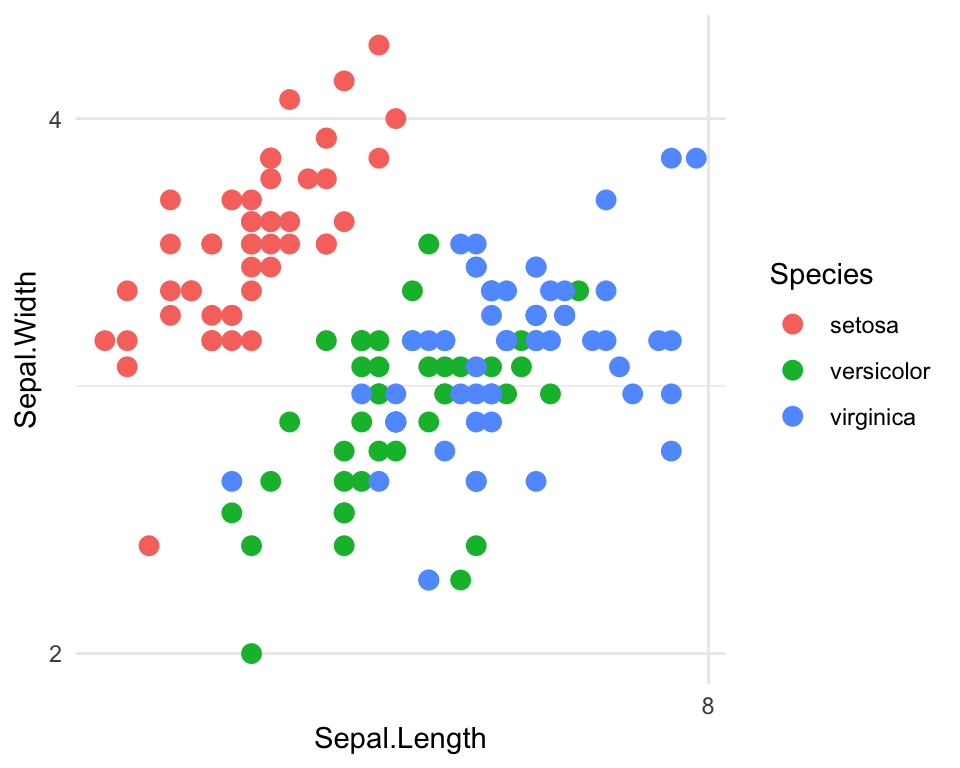
Man kan også prøve at bruge “sqrt” i stedet for “log2”.
Det er dog vigtigt at bemærke, at dette er forskelligt fra at transformere selve dataene, som bruges i plottet. Jeg kan for eksempel opnå det samme resultat ved at ændre datasættet, før jeg anvender ggplot2. Her behøver jeg ikke at bruge scale_x_continuous(trans = "log2"), men jeg bemærker, at tallene på akserne reflekterer de transformerede data og ikke de oprindelige værdier. Beslutningen afhænger af, hvad man gerne vil opnå med analysen af dataene.
iris$Sepal.Length <- log2(iris$Sepal.Length)
iris$Sepal.Width <- log2(iris$Sepal.Width)
ggplot(iris, aes(x=Sepal.Length, y=Sepal.Width,col=Species)) +
geom_point(size=3) +
theme_minimal() 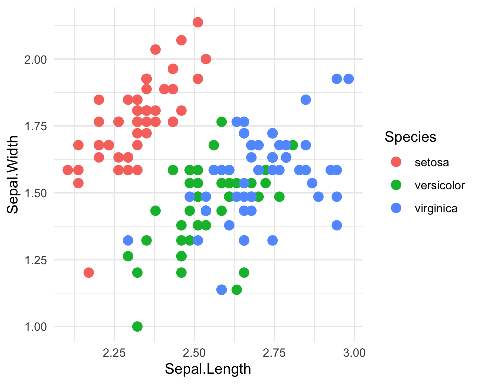
4.2.3 Flip coordinates (coord_flip)
Vi kan bruge coord_flip() til at spejle x-aksen på y-aksen og omvendt (det svarer til at drejer plottet 90 grader). Se følgende eksempel, hvor jeg først opretter variablen Sepal.Group, laver et barplot og anvender coord_flip for at få søjlerne til at stå vandret.
#Sepal.Group defineret som i går
iris$Sepal.Group <- ifelse(iris$Sepal.Length>mean(iris$Sepal.Length),"Long","Short")
ggplot(iris,aes(x=Species,fill=Sepal.Group)) +
geom_bar(stat="count",position="dodge",color="black") +
coord_flip() +
theme_minimal()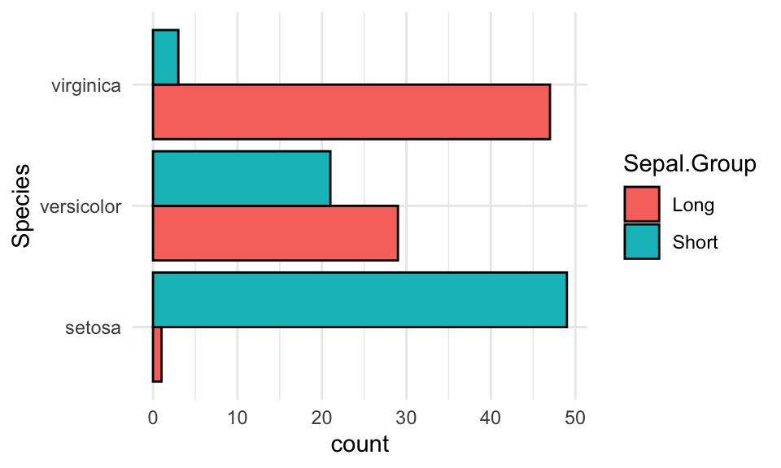
Man kan ændre rækkefølgen af de tre Species ved at bruge funktionen scale_x_discrete() og angive den nye rækkefølge med indstillingen limits:
ggplot(iris,aes(x=Species,fill=Sepal.Group)) +
geom_bar(stat="count",position="dodge",color="black") +
coord_flip() +
scale_x_discrete(limits = c("virginica", "versicolor","setosa")) +
theme_minimal()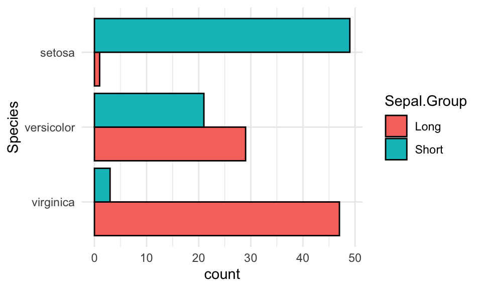
4.3 Mere om farver og punkt former
Der er flere måder at specificere farver på i ggplot2. Man kan nøjes med den automatiske løsning, som er hurtig (og effektiv i mange situationer), eller man kan bruge den manuelle løsning, som tager lidt længere tid at kode, men er brugbar, hvis man gerne vil lave et plot til at præsentere for andre.
4.3.1 Automatisk farver
Her er den nemme løsning, hvor vi anvender automatiseret farvning ved at benytte colour=Species indenfor aes().
#automatisk løsning
ggplot(iris, aes(x=Sepal.Length, y=Sepal.Width, colour=Species)) +
geom_point() +
theme_minimal() 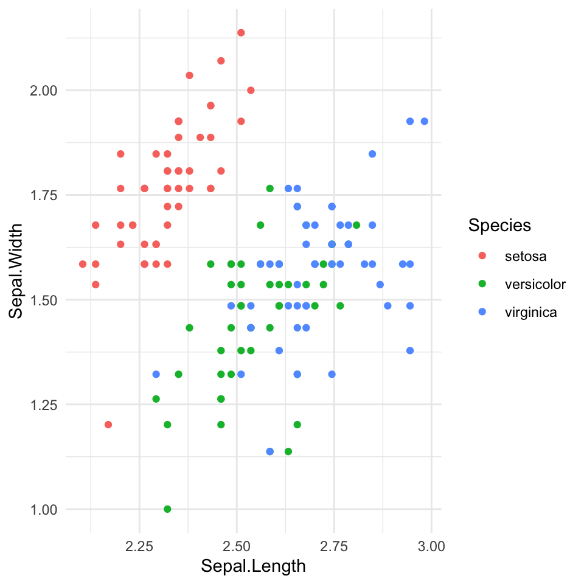
4.3.2 Manuelle farver
Hvis man foretrækker at bruge sine egne farver, kan man gøre det ved at benytte funktionen scale_colour_manual(). Her angiver man stadig colour=Species indenfor aes(), men man specificerer farverne for de forskellige arter indenfor scale_colour_manual, med indstillingen values.
#manuelt løsning
ggplot(iris, aes(x=Sepal.Length, y=Sepal.Width, colour=Species)) +
scale_colour_manual(values=c("purple", "yellow","pink")) +
geom_point() +
theme_minimal() 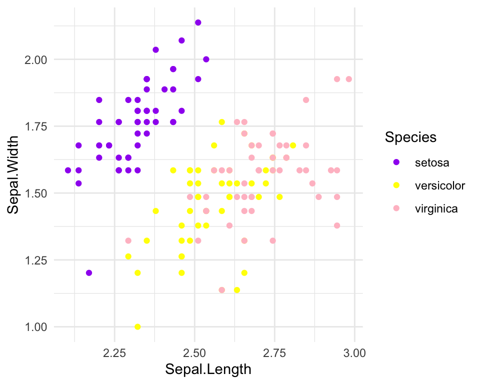
En fantastisk pakke er RColorBrewer. Pakken indeholder mange forskellige “colour palettes”, det vil sige grupper af farver, der passer godt sammen. Man kan derfor slippe for selv at sammensætte en farvekombination, der passer til plottet. Nogle af farvepaletterne tager også hensyn til, om man er farveblind, eller om man ønsker en farvegradient eller et sæt diskrete farver som ikke ligner hinanden.
I følgende eksempel indlæser jeg pakken RColorBrewer og anvender funktionen scale_colour_brewer med indstillingen palette="Set1":
#install.packages("RColorBrewer")
library(RColorBrewer)
#manuelt løsning
ggplot(iris, aes(x=Sepal.Length, y=Sepal.Width, colour=Species)) +
scale_colour_brewer(palette="Set1") +
geom_point() +
theme_minimal() 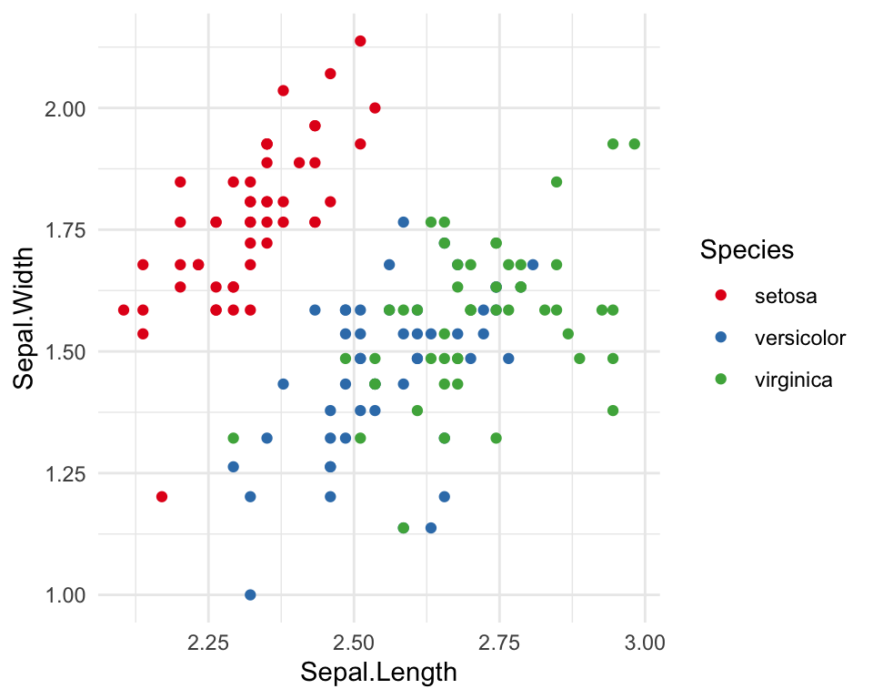
Bemærk, at både scale_color_manual() og scale_color_brewer() bruges til at sætte farver på punkter og linjer, hvorimod man ved boxplots eller barplots bruger scale_fill_manual() eller scale_fill_brewer() til at sætte farver på de udfyldte områder. For eksempel vil jeg i følgende eksempel gerne sætte farver på de udfyldte områder i et boxplot:
ggplot(iris,aes(x=Species,y=Sepal.Length,fill=Species)) +
geom_boxplot() +
scale_fill_brewer(palette="Set2") +
theme_minimal()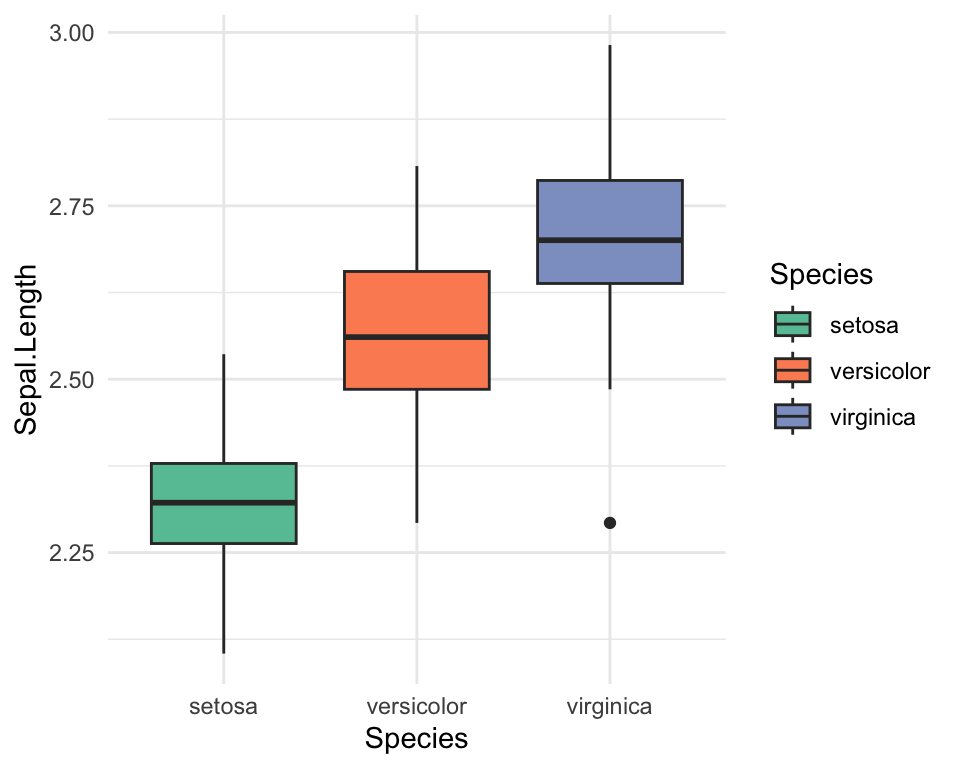
Her er en oversigt over de fire funktioner:
| Funktion | Beskrivelse |
|---|---|
scale_fill_manual(values=c("firebrick3","blue")) |
Bruges til manuelle farver i forbindelse med boxplots og barplots mv. |
scale_color_manual(values=c("darkorchid","cyan4")) |
Bruges til manuelle farver i forbindelse med punkter og linjer mv. |
scale_fill_brewer(palette="Dark2") |
Bruger farvepaletter fra RColorBrewer i forbindelse med boxplots, barplots mv. |
scale_color_brewer(palette="Set1") |
Bruger farvepaletter fra RColorBrewer i forbindelse med punkter og linjer mv. |
Der er også andre muligheder, hvis man har behov for dem - for eksempel kan man google efter scale_fill_gradient for kontinuerlige data.
Farver i RColourBrewer
Her er en nyttig reference, der viser de forskellige farver i pakken RColourBrewer.

4.3.3 Punkt former
Ligesom man kan lave forskellige farver, kan man også lave forskellige punktformer. Vi starter med den automatiske løsning ligesom vi gjorde med farver. Når det er en variabel, vi angiver, skal variabelnavnet skrives indenfor aes(). shape er en parameter, der er meget specifik for geom_point. Så vi vælger at skrive en ny aes() indenfor geom_point() i stedet for indenfor funktionen ggplot(). Husk, at man i funktionen ggplot() specificerer globale parametre, der gælder for hele plottet, mens man i funktionen geom_point() angiver parametre, der kun gælder for geom_point(). Se følgende eksempel:
ggplot(data=iris, aes(x = Sepal.Length, y = Sepal.Width, color = Species)) +
scale_color_brewer(palette="Set2") +
geom_point(aes(shape=Species)) +
theme_minimal()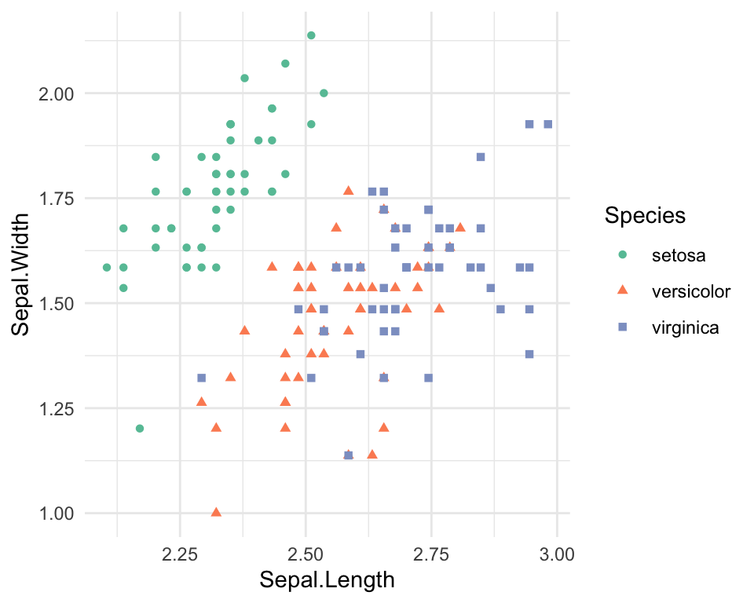
Nu har vi både en farve og en punkt-form til hver art i variablen Species.
Sætte punkt form manuelt
Hvis vi ikke kan lide de tre automatiske punktformer, kan vi ændre dem ved at bruge scale_shape_manual. Her vælger vi for eksempel values=c(1,2,3), men der er en reference nedenfor, hvor du kan se kombinationer mellem de numeriske tal og punktformer. Så kan du vælge dine favoritter.
ggplot(data=iris, aes(x = Sepal.Length, y = Sepal.Width, colour=Species)) +
geom_point(aes(shape=Species)) +
scale_color_brewer(palette="Set2") +
scale_shape_manual(values=c(1,2,3)) +
theme_minimal()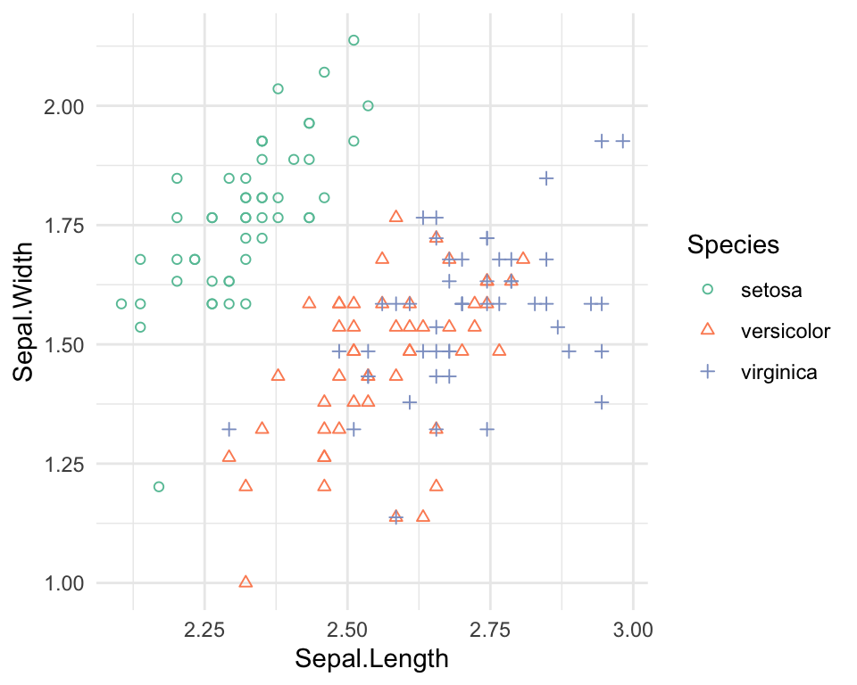
Reference for punkt former
Her er reference-tabellen for forskellige punktformer i ggplot2:
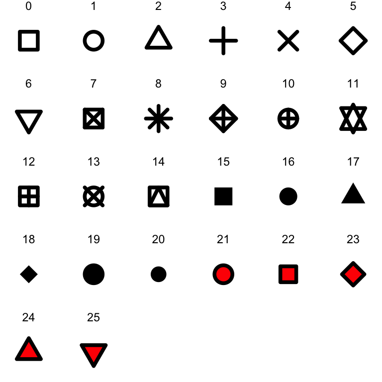
4.4 Annotations (geom_text)
4.4.1 Tilføjelse af etiketter direkte på plottet.
Man kan bruge geom_text() til at tilføje tekst til punkterne direkte på plottet. Her kan man fortælle, hvad teksten skal være - i dette tilfælde specificerer vi navnene på biler fra datasættet mtcars. Plottet er et scatterplot mellem variablerne mpg og wt.
data(mtcars)
mtcars$my_labels <- row.names(mtcars) #take row names and set as a variable
ggplot(mtcars,aes(x=mpg,y=wt)) +
geom_point() +
geom_text(aes(label=my_labels)) +
theme_minimal()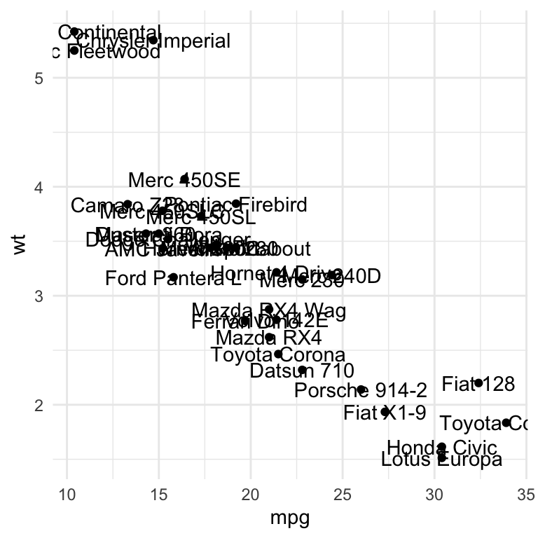
For at gøre det nemmere at læse kan man også fjerne selve punkterne:
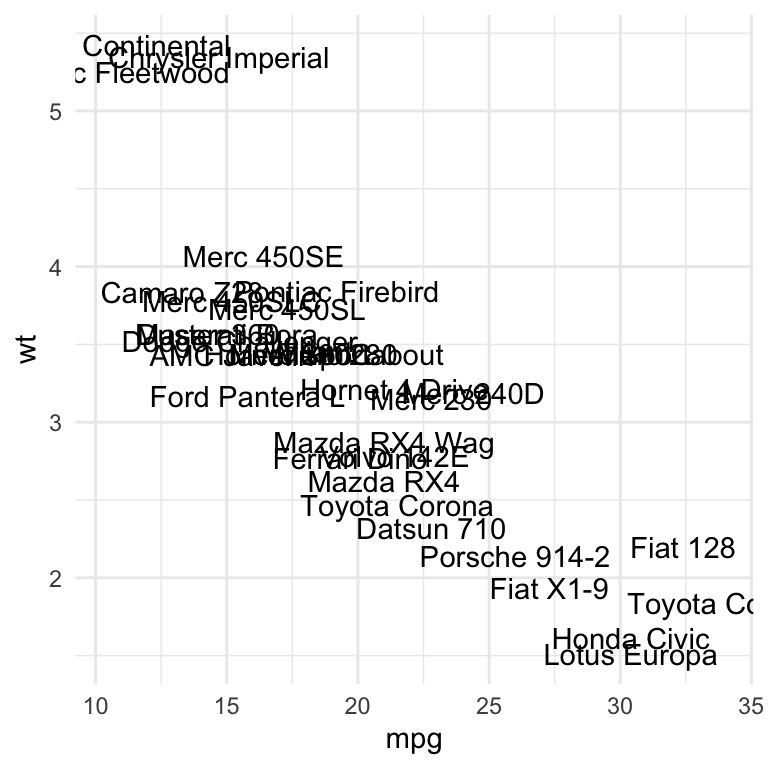
Teksten på plottet kan stadig være svær at læse. En god løsning er at bruge R-pakken ggrepel, som vist i følgende eksempel:
4.4.2 Pakken ggrepel for at tilføje tekst labeller
For at anvende pakken ggrepel på datasættet mtcars, skal man blot erstatte geom_text() med geom_text_repel():
library(ggrepel)
ggplot(mtcars,aes(x=mpg,y=wt)) +
geom_point() +
geom_text_repel(aes(label=my_labels)) +
theme_minimal()## Warning: ggrepel: 9 unlabeled data points (too many overlaps). Consider
## increasing max.overlaps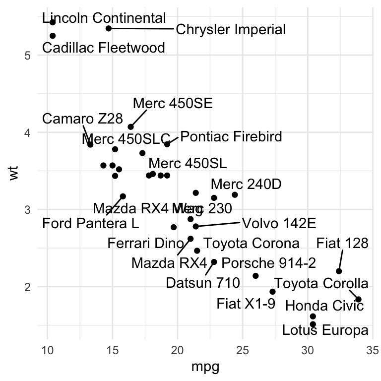
Nu kan vi se, at der ikke er nogen etiketter, som sidder lige overfor hinanden, fordi ggrepel() har været dygtig nok til at placere dem tæt på deres tilhørende punkter men ikke ovenpå hinanden. Der er også nogle punkter, hvor funktionen har tilføjet en linje for at gøre det klart, hvilken punkt teksten refererer til.
Vi har dog fået en advarsel i ovenstående kode. Hvis vi vil undgå denne advarsel, kan vi f.eks. specificere max.overlaps = 20.
library(ggrepel)
ggplot(mtcars,aes(x=mpg,y=wt)) +
geom_point() +
geom_text_repel(aes(label=my_labels),max.overlaps = 20) +
theme_minimal()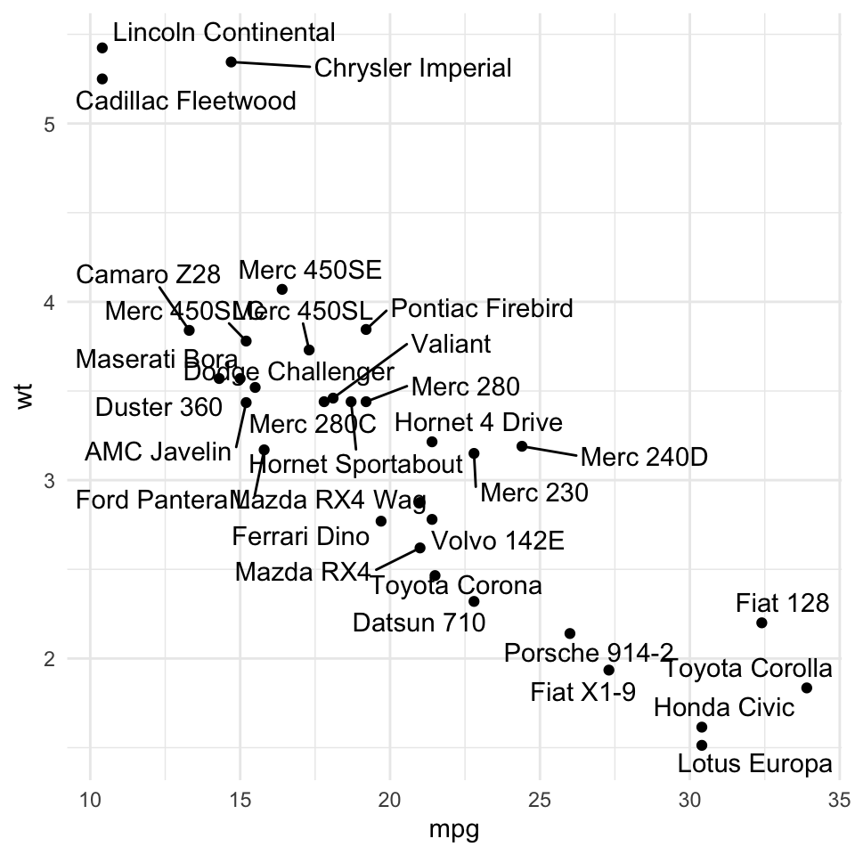
Nu kan du se, at du ikke længere får en advarsel, og der er tilføjet tekst til alle punkterne.
4.4.3 Tilføjelse af rektangler i regioner af interesse (annotate)
Hvis man gerne vil fremhæve et bestemt område i plottet, kan man bruge funktionen annotate(). Prøv selv at regne ud, hvad de indstillinger inden for annotate() betyder i det følgende eksempel:
ggplot(mtcars,aes(x=mpg,y=wt)) +
geom_point() +
geom_text_repel(aes(label=my_labels)) +
annotate("rect",xmin=18,xmax=23,ymin=2.5,ymax=3,alpha=0.2,fill="orange") +
theme_minimal()## Warning: ggrepel: 9 unlabeled data points (too many overlaps). Consider
## increasing max.overlaps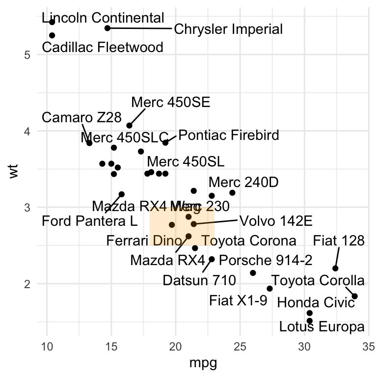
Man kan også benytte den samme funktion til at tilføje tekst på et bestemt sted:
ggplot(mtcars,aes(x=mpg,y=wt)) +
geom_point() +
geom_text_repel(aes(label=my_labels)) +
annotate("rect",xmin=18,xmax=23,ymin=2.5,ymax=3,alpha=0.2,fill="orange") +
annotate("text",x=25,y=2.75,label="Cars of interest",col="orange") +
theme_minimal()## Warning: ggrepel: 9 unlabeled data points (too many overlaps). Consider
## increasing max.overlaps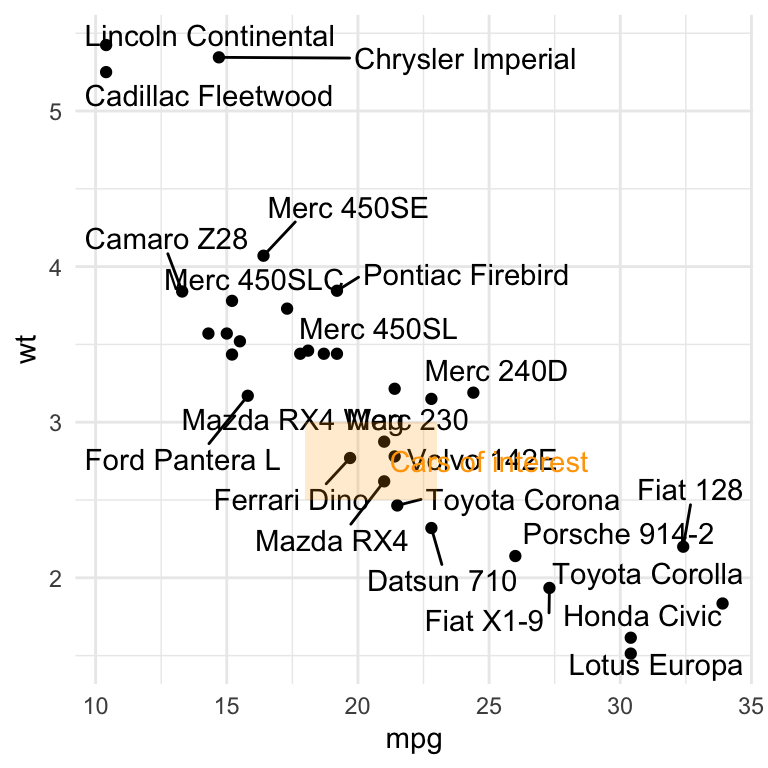
4.5 Adskille plots med facets (facet_grid/facet_wrap)
En stor fordel ved at bruge ggplot er evnen til at bruge funktionerne facet_grid() og facet_wrap() til at adskille værdier af en kategorisk variabel over flere plots. I følgende kode få vi et density plot, hvor de tre kurver, der tilhører de tre arter, ligger oven på hinanden i det samme plot:
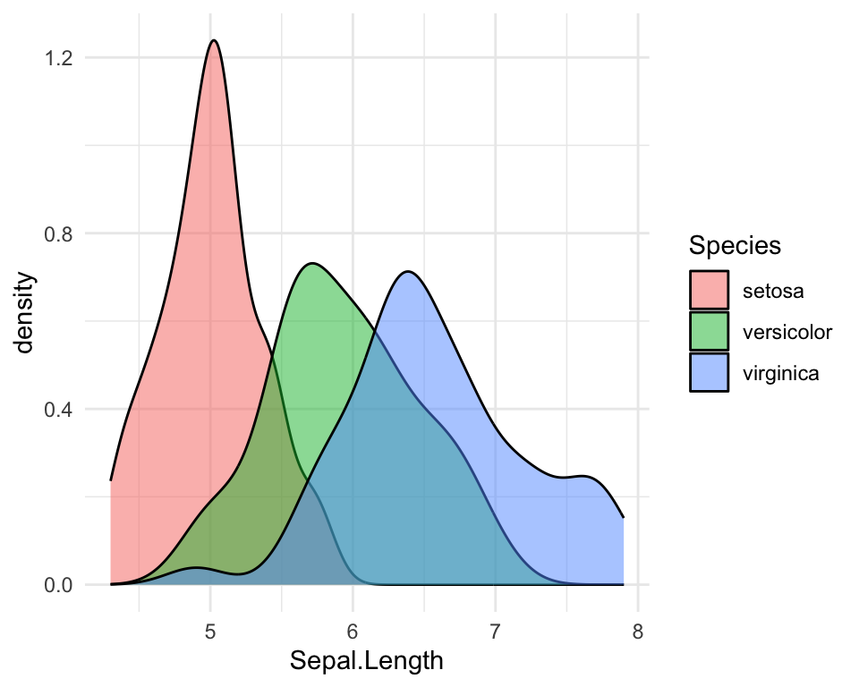
Med funktionerne facet_grid() eller facet_wrap() bruger vi ~ (tilde) til at angive, hvordan vi gerne vil visualisere de forskellige plots. Vi skal angive, om vi ønsker at opdele dem over rækker (variablerne venstre for ~) eller over kolonner (variablerne til højre for ~).
Det ovenstående density plot af Sepal.Length kan adskilles efter Species, således at man får tre plots med en kolonne til hver af de tre arter ved hjælp af facet_wrap() funktionen:
ggplot(iris,aes(x=Sepal.Length,fill=Species)) +
geom_density(alpha=0.5) +
facet_grid(~Species) + #split Species into different column-wise plots
theme_minimal()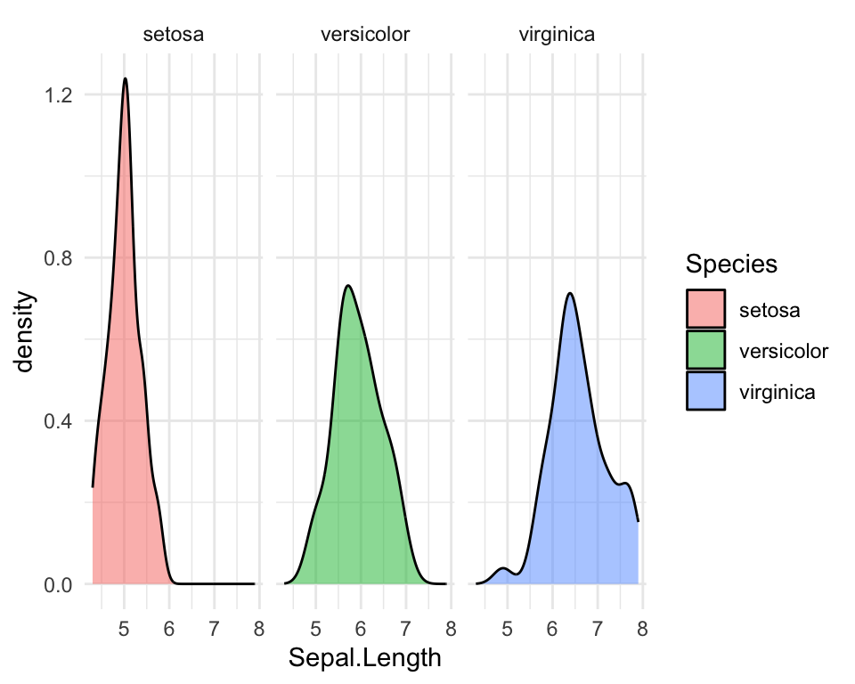
Man kan også vælge at fordele plotterne over rækkerne ved hjælp af facet_wrap(). Her skal man dog huske at bruge en . efter ~ for at betegne, at man kun vil adskille plots over rækkerne, mens man til gengæld kan droppe . hvis man kun vil adskille over kolonner som i det foregående eksempel.
ggplot(iris,aes(x=Sepal.Length,fill=Species)) +
geom_density(alpha=0.5) +
facet_grid(Species~.) + #split Species into different column-wise plots
theme_minimal()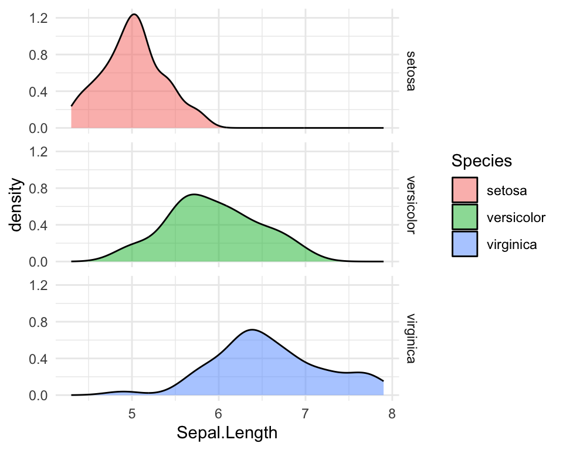
Her angives Sepal.Group ~ Species, hvilket betyder, at plotterne bliver adskilt efter både Sepal.Group og Species - Sepal.Group over rækkerne og Species over kolonnerne - ved hjælp af facet_grid() funktionen:
ggplot(iris,aes(x=Sepal.Length,fill=Species)) +
geom_density(alpha=0.5) +
facet_grid(Sepal.Group~Species) + #split Species into different column-wise plots
theme_minimal()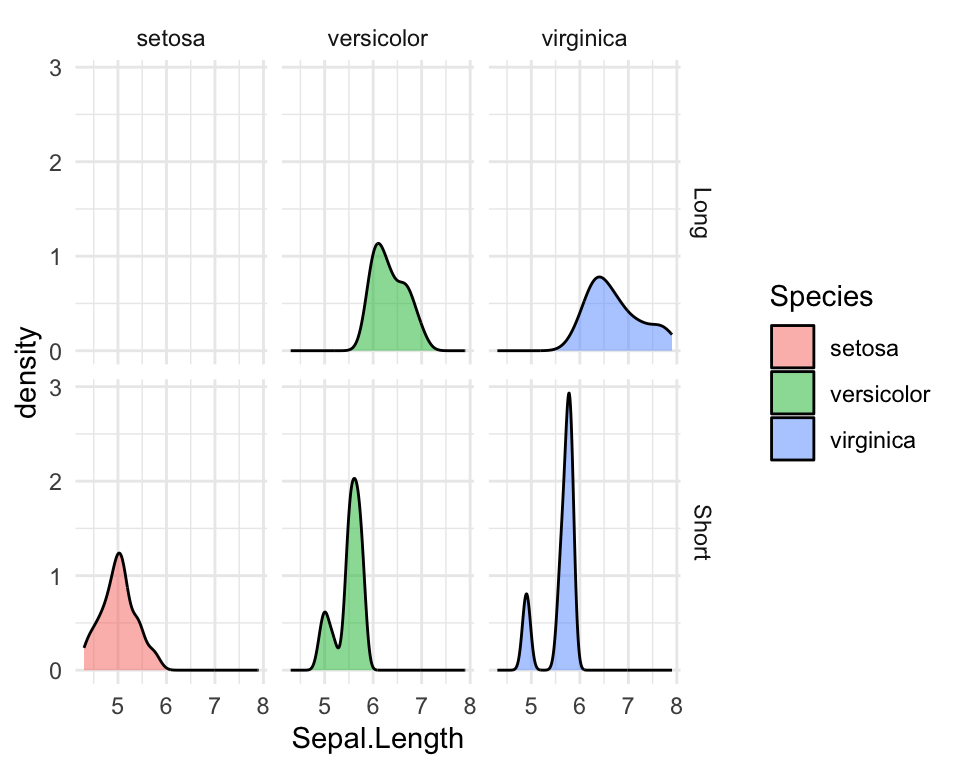
Bemærk forskellen mellem facet_grid() og facet_wrap():
#same plot, replace facet_grid with facet_wrap
ggplot(iris,aes(x=Sepal.Length,fill=Species)) +
geom_density(alpha=0.5) +
facet_wrap(Sepal.Group~Species) +
theme_minimal()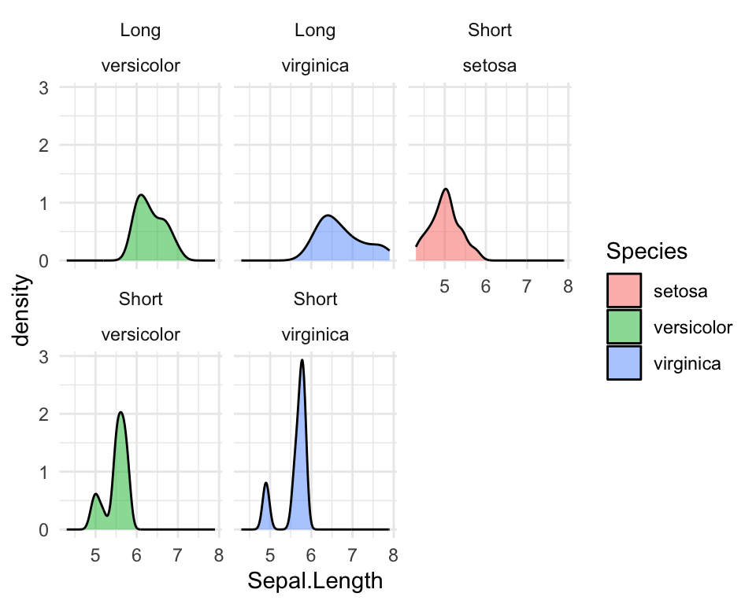
I facet_grid() bliver man tvunget til at få et “grid” layout. Vi har således 6 plot i en 2 x 3 grid (2 niveauer for variablen Sepal.Group og 3 niveauer for variablen Species), og det sker selvom den ene af dem ikke har nogen data - der findes altså ikke observationer, hvor Species er “Setosa” og Sepal.Group er “Long”, men vi får et plot alligevel for at bevare strukturen. Med facet_wrap() bliver plot uden data droppet, og i dette tilfælde får man 5 plots i hvad der kaldes en “ribbon”.
Med facet_wrap() kan man også angive antallet af rækker og kolonner man vil have for plotterne. For eksempel kan man angive nrow = 1 eller ncol = 5 for at få alle fem plots på en række.
ggplot(iris,aes(x=Sepal.Length,fill=Species)) +
geom_density(alpha=0.5) +
facet_wrap(Sepal.Group~Species,nrow = 1) +
theme_minimal()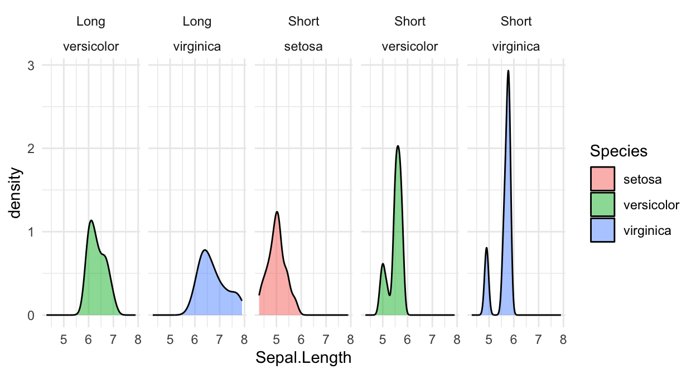
Til sidst kan det være, at vi vil gerne frigøre skalaen på y-aksen. På den måde har ikke alle plots de samme maksimale y-værdier, og de enkelte plot benytter i stedet egne værdier til at bestemme skalaen. Det kan være brugbart, hvis man inddrager forskellige målinger. Men vær dog opmærksom på, hvad der bedst giver mening - hvis man direkte vil sammenligne to af plottene, så er det bedre, at de deler samme y-akseskala.
#same plot, replace facet_grid with facet_wrap
ggplot(iris,aes(x=Sepal.Length,fill=Species)) +
geom_density(alpha=0.5) +
facet_wrap(Sepal.Group~Species,ncol = 5,scales = "free") +
theme_minimal()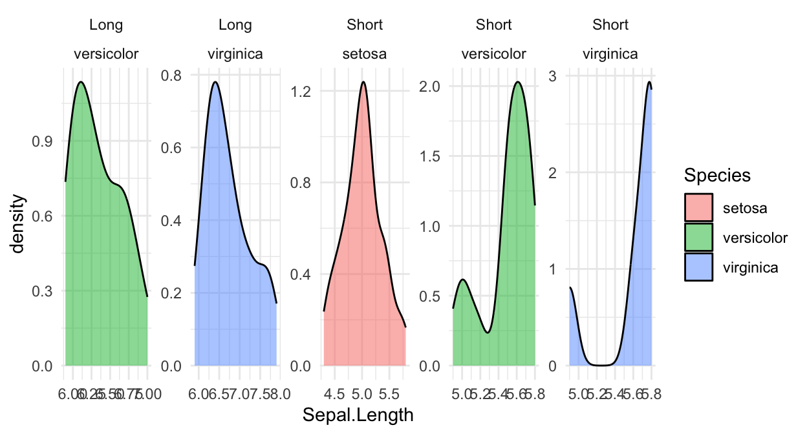
Disse funktioner er meget brugbare, selvom de opnår stort set samme resultat. Der er dog små forskelle mellem dem, som er værd at huske.
4.6 Gemme dit plot
Her bruger vi R Markdown til at lave en rapport, som indeholder vores plots. Men det kan også være, at man gerne vil gemme sit plot som en fil på computeren. Til det kan man bruge kommandoen ggsave():
Figuren vil blive gemt i din working directory (eller den mappe, hvor din .Rmd fil ligger). Filtypen .pdf kan erstattes med andre formater, f.eks. .png eller .jpeg. Hvis man gerne vil redigere sit plot (f.eks. i Adobe Illustrator eller Inkscape), vil jeg anbefale at gemme det som .pdf.
Man kan godt ændre højden og bredden på det gemte plot med width og height:
4.7 Problemstillinger
Problem 1) Lav quiz - “Quiz - ggplot2 dag 2”
Problem 2) (Øvelse med factorer og plots)
a) Åbn datasættet mtcars og lav et barplot:
- Brug variablen
cylpå x-aksen og tilføj forskellige farver til de forskellige niveauer (dvs. factor levels) afcyl. - Hvad kunne være et problem med vejen
cyler plottet? Er farverne vist i plottet? - Tjek x-aksen - variablen er numerisk, men bør fortolkes som en faktor.
- Lav variablen om til en faktor (eller bare skriv
as.factor(cyl)i selve plottet) og lav dit plot igen.
b) Rediger nedenstående kode til at fordele data baseret på gear:
- Opdel kolonnerne ved at angive farver efter variablen
geari dit plot. gear-kolonnerne skal sidde ved siden af hinanden. (Huskpositionargument.)- Vær igen opmærksom på, hvordan R fortolker variablen.
## Warning: The following aesthetics were
## dropped during statistical
## transformation: fill.
## ℹ This can happen when ggplot
## fails to infer the correct
## grouping structure in the
## data.
## ℹ Did you forget to specify a
## `group` aesthetic or to
## convert a numerical
## variable into a factor?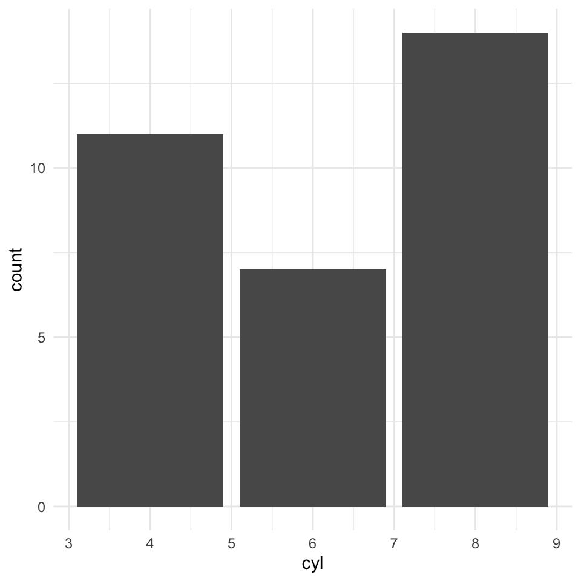
I det følgende spørgsmål arbejder du med datasættet Palmer Penguins. Installere venligst pakken palmerpenguins hvis du ikke har brugt den før.
Data beskrivelse: The palmerpenguins data contains size measurements for three penguin species observed on three islands in the Palmer Archipelago, Antarctica.
#install.packages("palmerpenguins") #køre hvis ikke allerede installeret
library(palmerpenguins)
library(ggplot2)
library(tidyverse)
head(penguins)FALSE # A tibble: 6 × 8
FALSE species island bill_length_mm bill_depth_mm flipper_length_mm body_mass_g
FALSE <fct> <fct> <dbl> <dbl> <int> <int>
FALSE 1 Adelie Torgersen 39.1 18.7 181 3750
FALSE 2 Adelie Torgersen 39.5 17.4 186 3800
FALSE 3 Adelie Torgersen 40.3 18 195 3250
FALSE 4 Adelie Torgersen NA NA NA NA
FALSE 5 Adelie Torgersen 36.7 19.3 193 3450
FALSE 6 Adelie Torgersen 39.3 20.6 190 3650
FALSE # ℹ 2 more variables: sex <fct>, year <int>Brug venligst ?penguins for at se flere detaljer om variablenavner.
Vi skal starte med at rydde lidt op i datasættet. Til det, brug “drop_na()” for at fjerne alle rækker med NA (manglende) værdier (her skal man have tidyverse-pakken indlæst):
Problem 3) Manuelt farver og punkter
a) Lav et spredningsdiagram / scatter plot med ggplot()-funktionen:
bill_length_mmpå x-aksen.bill_depth_mmpå y-aksen.- Giv hver art (variablen
species) sin egen farve. - Sæt et tema.
b) Lav følgende ændringer til dit plot fra a):
- Ændr farver manuelt - prøv at angive farver med
scale_color_manual()og løsningen med pakkenRColorBrewer(husk at installere/indlæse pakken, hvis nødvendigt). - Brug forskellige punkt-former til hver art i variablen
species. - Prøv at vælge punkt-former fra listen (i kursusnotaterne) og specificer dem manuelt.
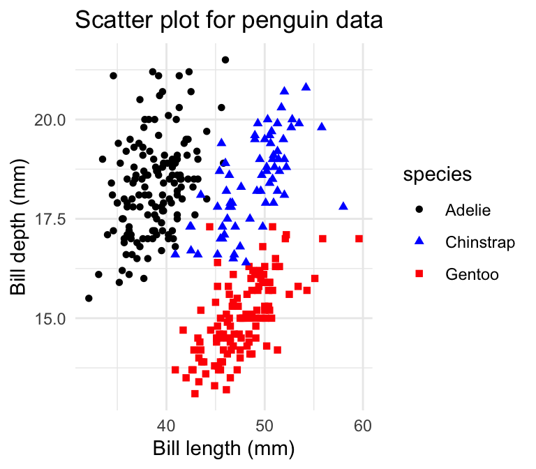
Figure 4.1: Min løsning
Problem 4) Koordinatsystemer
Tag udgangspunkt i overstående scatter plot fra 3):
a) Brug coord_cartesian(), så kun pingviner med en næblængde (variablen bill_length_mm) mellem 40 og 50 og en næbdybde (variablen bill_depth_mm) mellem 16 og 19 er medtaget på plottet.
b) Brug pakken ggrepel (husk at installere/indlæse) og tilføj navnene på de forskellige øer som tekst etiketter / labels direkte på plottet.
c) Lav en delmængde af datasættet penguins efter samme betingelser som i a) og brug din nye dataframe som parameteren data med geom_text_repel()-funktionen. Dette undgår at tekst bliver plottet for punkter udenfor området angivet med coord_cartesian().
## Warning: ggrepel: 14 unlabeled data points (too many overlaps). Consider
## increasing max.overlaps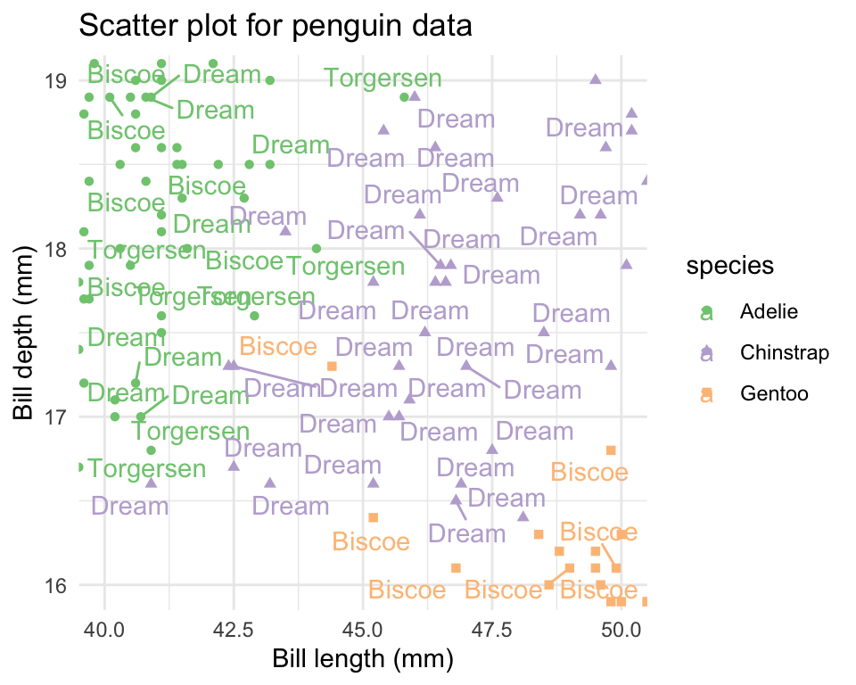
Figure 4.2: Min løsning
Problem 5) Histogram med facets
Lav et histogram:
- Variablen
flipper_length_mmpå x-aksen. - Anvend
facet_gridtil at adskille dit plot i tre dele efter variablenspecies. - Kombiner samtidig forskellige farver med hver art fra
speciesvariablen. - Hvis nødvendigt, ændr parameteren
binstil noget andet indenforgeom_histogram().
Her er en mulig løsning:
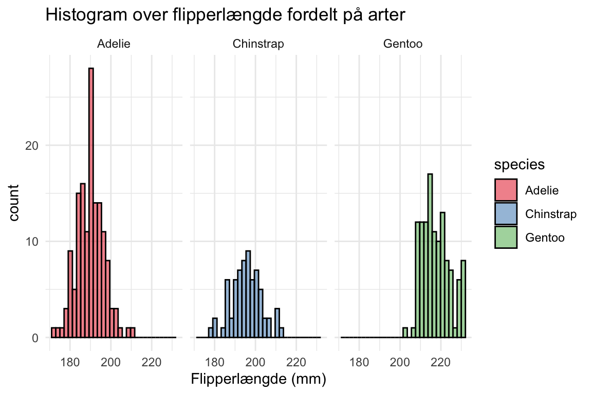
Problem 6) Density plot med facets
a) Lav et tæthetsdiagram / density plot af body_mass_g variablen.
- Anvend funktionen
facet_gridtil at lave tre plots, et til hver art i variablenspecies. - Brug også
filltil at opdele hver af dine tre density kurver efter variablensex(dvs. du har stadig 3 plots, og hvert plot har to density kurver). - Gør dine density plots gennemsigtige.
- Skriv en sætning om forskellen i
body_mass_gmellem “females” og “males”.
b) Udvikl din facet_grid kode til at adskille plots yderligere således at du har en “grid” struktur med de forskellige øer (variablen island) på rækkerne og de tre arter (variablen species) på kolonnerne.
c) Kan du forklare, hvorfor der er blanke plots i din grid? Til det, eksperimenter f.eks. med facet_wrap i stedet for facet_grid.
Problem 7) Koordinatsystemer
Lav et søjlediagram / bar plot af antallet for species opdelt efter sex.
Anvend ‘coordinate flip’ for at ændre plottet til at være vandret / horizontal.
Vælg nogle farver - f.eks.
palette = "Accent"fraRColorBrewer.Ændr rækkefølgen af de tre kolonner, således at arten med flest observationer er øverst, og arten med færrest er nederst.
Prøv også at tilføje
scale_y_reverse()og kig på resultatet.
Her er en mulig løsning:
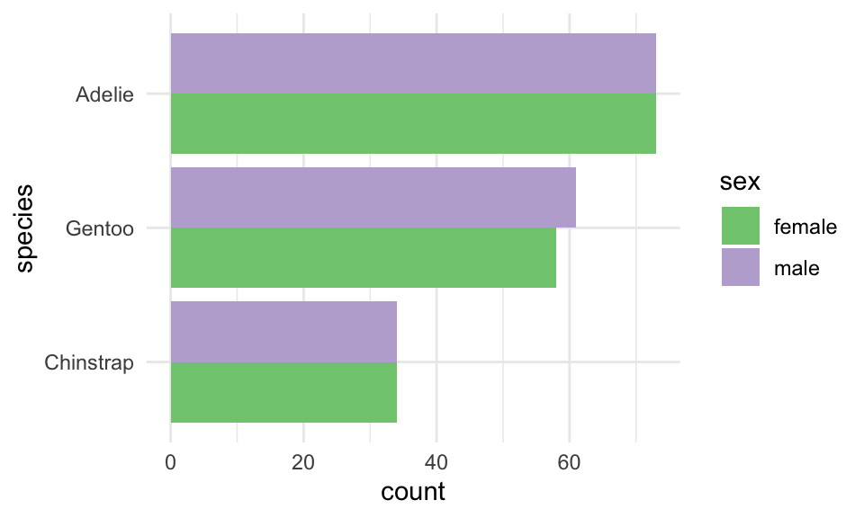
Problem 8) Lav et boksplot / boxplot af body_mass_g opdelt efter species.
Tilføj “jitter” punkter ovenpå boksplottet.
Specificer nogle farver manuelt for både bokse og punkterne (en farve til hver art).
Giv det en passende titel og nogle akse-etiketter.
Tilføj en ny variabel
island_binarytilpenguins, som er “Biscoe” hvisislander ‘Biscoe’ og “not Biscoe” hvis ikke.Adskil plottene ved at opdele efter
island_binary.Ekstra: Prøv
?geom_violinsom erstatning forgeom_boxplot.
Problem 9) Annotationer og linjer.
a) Lav et spredningsdiagram / scatterplot af bill_length_mm vs bill_depth_mm.
- Anvend passende titel/etiketter/tema.
- Anvend forskellige farver for de tre
species. - Tjek funktionen
?annotateog brug den medgeom = "text"og passende x- og y-akse værdier til at tilføjespeciesnavne som tekst direkte på plottet (se eksempel nedenfor for forklaringen). - Udforsk, hvordan man gør teksten større, som i løsningen nedenfor.
- Fjern legenden med
show.legend = FALSEindenforgeom_point().
Her er en mulig løsning:
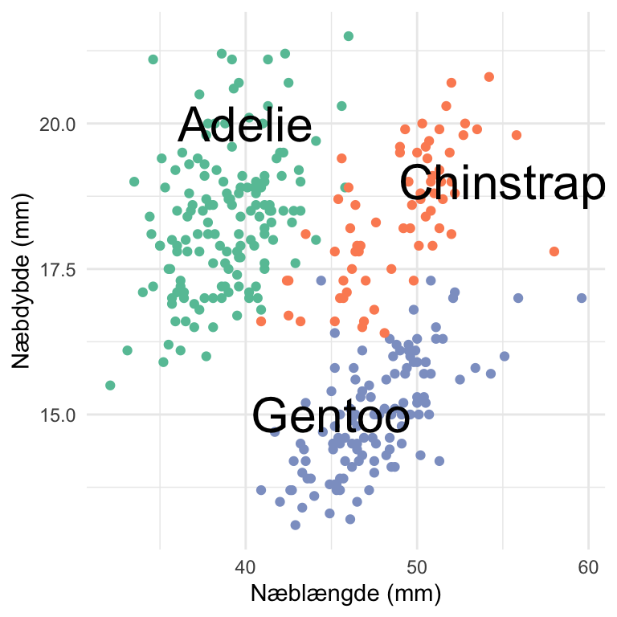
b) Vi vil gerne tilføje nogle lodrette og vandrette linjer til plottet, som viser gennemsnitsværdierne for variablerne for de tre arter.
- Først skal du bruge
tapplytil at beregne de gennemsnitlige værdier for henholdsvisbill_length_mmogbill_depth_mmopdelt efterspecies(gem dem som henholdsvismean_lengthogmean_depth). - Brug
mean_lengthogmean_depthtil at tilføje linjer til plottet med den relevante funktion.
c) Kan du tilpasse linjerne så deres farver matcher punkterne af den samme art (se løsningen nedenfor)? Der er sikkert mange måder at gøre det på, men hvis du har brug for et hint, kan du kigge nedenfor:
- Hint: start med følgende dataframe, der bruger dine beregnede værdier:
mydf <- data.frame("species" = names(mean_length), "mlength" = mean_length, "mdepth" = mean_depth)
mydf## species mlength mdepth
## Adelie Adelie 38.82397 18.34726
## Chinstrap Chinstrap 48.83382 18.42059
## Gentoo Gentoo 47.56807 14.99664- Angiv parameteren
datatil at være ovenstående dataframe igeom_vline()og brug lokal æstetik (aes()) til at angive parametre til linjerne. - Gør det samme for
geom_hline(). - Specificer også “stiplede” linjer.
Her er en mulig løsning:
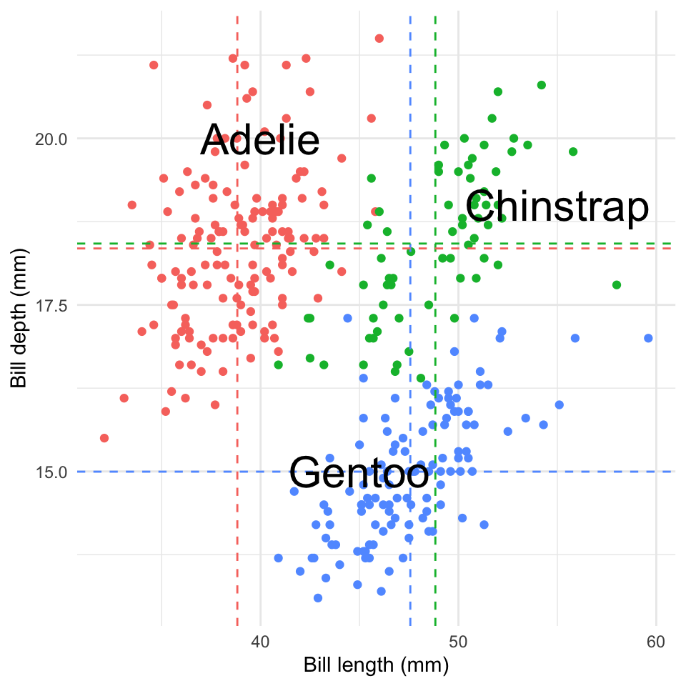
Problem 10) Ekstra. Kig på “cheatsheet” for ggplot2 (klik på “Help” > “Cheatsheets” og vælg den for ggplot2) og prøv nogle af de aspekter, som ikke er blevet dækket i kurset indtil videre! Vi vil gerne høre, hvis du finder noget meget nyttigt, som ellers er blevet glemt i notaterne.